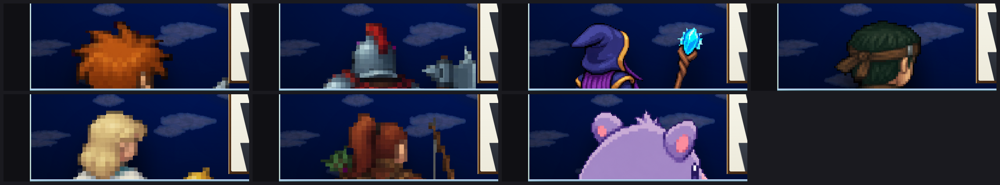

ally-creature-back.png. 아래 — 이후. 액터별 뒷모습.6인의 뒷모습 스프라이트 생성 · 리소스 등록 · 선택 로직. 2026-08-29.
후면 구도 스킨(포켓몬 등)은 파티 전원에게 ally-creature-back.png 한 장을 돌려 줬다. 어느 액터를 편성해도 같은 보라색 생물이 뒤통수를 보였다 — 정면 시트로는 6인이 서로 다른 인물인데, 뒤에서 보면 전부 같은 생물이었다.
ally-creature-back.png. 아래 — 이후. 액터별 뒷모습.정면 idle 셀을 384px 로 확대해 세션 작업 폴더에 reference.png 로 깔고, grok 이 그 파일을 파일 읽기 툴로 실제로 열어 보게 했다. 자세는 유지하고 시점만 돌린다.

idle 셀. 아래 — 신규 뒷모습. 좌→우 hero-01 주인공 · hero-02 수호자 · hero-03 마도사 · hero-04 정찰병 · hero-05 성직자 · hero-06 궁수.여섯 장 전부 얼굴이 보이지 않고, 후면에서만 보이는 디테일이 제대로 들어왔다:
| 슬러그 | 크기 | 채움 | 모델이 칠한 배경색 | 남은 프린지 |
|---|---|---|---|---|
| hero-01 | 712×712 | 41.1% | rgb(217,39,217) | 0 |
| hero-02 | 712×712 | 51.6% | rgb(245,22,201) | 0 |
| hero-03 | 712×712 | 35.7% | rgb(247,52,218) | 0 |
| hero-04 | 712×712 | 36.4% | rgb(248,2,249) | 0 |
| hero-05 | 712×712 | 32.9% | rgb(237,88,244) | 0 |
| hero-06 | 712×712 | 42.1% | rgb(243,155,230) | 0 |
"프린지" 는 그 이미지의 실제 배경색과 허용 오차(62) 안에 있는 남은 픽셀 수다. 거친 판정식(r>140 && b>140 && g<110)으로 재면 마도사가 2134 픽셀 걸리지만 전부 로브·머리의 연보라이고, 실제 배경색 기준으로는 0 이다. 보라색 피사체에 그 판정식을 쓰면 안 된다.
첫 결과물은 마젠타 사각 덩어리였다(채움 93.4%, 마젠타 284,321 픽셀). 원인은 내가 넣은 padWithMagenta() 였다.
processSprite 는 배경 기준색을 테두리 픽셀의 중앙값에서 뽑는다. 원본 주위에 순수 #FF00FF 띠를 두르면 그 중앙값이 순수 마젠타로 바뀐다. 그런데 모델이 칠한 배경은 rgb(216,39,217) — 순수 마젠타와의 거리가 67 로 허용 오차 62 를 넘는다. flood fill 이 덧댄 띠만 지우고 원본 경계에서 그대로 멈췄다.
더 나쁜 건 게이트가 통과시켰다는 점이다: 띠 면적만으로 keyed 비율이 25.7% 를 찍었고 하한이 5% 였다(실측 keyed 26% = 띠 362,768 / 전체 1,411,344 와 정확히 일치).
고친 방식은 두 가지다:
padWithBackground() — 순수 마젠타가 아니라 같은 sampleBackground() 로 원본에서 뽑은 색으로 덧댄다. 기준색이 원본과 같게 유지된다.MIN_INNER_KEYED (15%) — 띠를 뺀 원본 영역 안에서 지워진 비율을 따로 잰다. 성공 컷은 51~72%, 실패 컷은 0.0% 였다.이게 우연한 한 장의 문제가 아니었다는 근거 — 모델이 칠하는 마젠타는 매번 다르고, 6장 중 4장이 순수 마젠타 패딩으로는 실패했을 거리다:
| 슬러그 | 배경색 | 순수 #FF00FF 와 거리 | 순수 마젠타로 덧댔다면 |
|---|---|---|---|
| hero-01 | rgb(217,39,217) | 66.4 | 실패 |
| hero-02 | rgb(245,22,201) | 59.2 | 통과 |
| hero-03 | rgb(247,52,218) | 64.3 | 실패 |
| hero-04 | rgb(248,2,249) | 9.4 | 통과 |
| hero-05 | rgb(237,88,244) | 90.5 | 실패 |
| hero-06 | rgb(243,155,230) | 157.5 | 실패 |
첫 시도는 참조 컷을 거의 그대로 베껴 눈·코·입이 다 보이는 정면이 나왔다. 공통 NEGATIVE 에는 "정면 보행 스프라이트 금지" 만 있어서 정면 전투 포즈는 아무것도 막지 않았다. 프롬프트를 구조적으로 고쳤다:
NEGATIVE_BACK — 얼굴·눈·코·입·정면·측면 프로필·가슴 문장을 명시적으로 금지.who 가 정면 기준 서술임을 알려 카메라를 앞으로 끌어당기지 않게 했다.public/ 에 복사하지 않고 "skip" 만 찍고 끝났다 — 출하 파일이 없거나 낡아도 아무 일도 안 했다. 이제 캐시로 건너뛰어도 publish() 를 반드시 지난다.raw.png 가 있으면 생성을 건너뛰고 후처리만 다시 돌린다. 덕분에 grok 이 이미지를 저장한 뒤 exit 1 로 죽은 hero-02 를 재생성 없이 건졌다.battleFieldDom.ts 의 우선순위는 네 단계다. 위에서 먼저 맞는 것을 쓴다:
| # | 조건 | 쓰는 그림 |
|---|---|---|
| 1 | actor.speciesId 있음 | 종족 그래픽(파티 몬스터) — 기존 그대로 최우선 |
| 2 | partyFacing === "front" | 저작된 3×8 전투 시트 — 기존 그대로 |
| 3 | partyFacing === "back" + generated-actor-<slug>-back 리졸브 성공 | 신규 액터별 뒷모습 |
| 4 | 나머지 | 예전 공용 폴백(ally-creature-back 또는 전사/마법사 교대) |
슬러그는 battleCharacterResourceId 에서 유도한다(…hero-03-battle → …hero-03-back). 스키마·에디터·직렬화·픽스처 변경이 0 이다. id 를 만들었다는 것만으로 쓰지 않는다 — 리졸브까지 성공해야 3단계로 간다. 안 그러면 없는 파일을 src 에 박는다.

dead 는 누워서 셀 바닥에 붙는다.| 항목 | 결과 |
|---|---|
test/battleFieldAllySprite.test.ts (신규) | 7/7 통과 |
test/battlerPoseFrame.test.ts, spriteProcess, heroBattleSheetContract, generatedAssetManifest, resourceProfiles | 전부 통과 |
| 뒷모습 6장 e2e 프로브 계약(712×712 · 네 코너 알파 0 · 가시 픽셀 > 0) | 로컬에서 6/6 확인 |
npm run gates 회귀 판정 | 내 변경 기인 0건 |
gates 가 보고한 10건은 전부 내 변경 밖이다. 깨끗한 HEAD 워크트리를 따로 만들어 대조해 확정했다:
playerBuild, pageItemCondition, battleDomIncremental) — 깨끗한 HEAD 에서도 똑같이 실패한다. battleDomIncremental 은 공유 node_modules 에 @playwright/test 가 없어서 나는 환경 문제다.stardewDemo) — 깨끗한 HEAD 에서는 통과한다. 이 워크트리에 있는 다른 세션의 커밋 안 된 적 로스터 정리(enemy_mine_skel_archer 의 speciesId 제거)가 원인이다.typecheck 2건도 내 코드가 아니다 — 설치된 TypeScript 가 이 저장소의 baseUrl 을 더 이상 허용하지 않는 툴체인 문제다(files: 0 — 어느 소스 파일에도 귀속되지 않는다).
test/defaultDatabase.test.ts 2건은 시작 파티 인원(2 vs 기대 4) 단정이고 HEAD 에 그대로 있다. 내가 더한 성직자·궁수 단정은 그보다 먼저 실행되어 통과한다.
partyMax: 1 — 계획서가 명시적으로 범위 밖으로 둔 항목. 뒷모습이 6장 생겨도 선두 1명만 보인다. 올리는 건 스킨 레이아웃·HUD 재설계다.
앞선 판본은 이 절이 "남은 것" 이었다. 공유 node_modules 에 @playwright/test 가
없어 scripts/runtime-qa.mjs 를 못 돌렸기 때문이다. 캐시에 있는 브라우저 바이너리를
playwright-core 로 직접 몰아서 우회했다(scripts/qa/back-battler-qa.mjs,
src/qa/backBattlerHarness.ts, qa-back-battler.html). 하네스는 실제 전투 장면을
띄우고 아군 이미지의 src·박스·computed transform·콘솔 오류를 읽는다.
여기서 내 자신의 결함 1건이 잡혔다 — 여섯 장 전부 적 반대쪽을 보고 있었다.
COMPOSITION_BACK 은 포켓몬 스킨이 아군을 scaleX(-1) 로 미러링한다고 보고
"적은 좌상단" 이라 지시했다. 그 전제가 틀렸다. 레거시
18-pokemon-layout-redesign.css:48 의 scaleX(-1) 은
battle-skins/_battlers.css:32-36 이 같은 요소를 더 구체적인 선택자로 다시 잡아
transform: none !important 로 취소한다. 실측 computed transform 은
여덟 케이스 전부 none 이었다.
그래서 모델은 지시대로 왼쪽을 보게 그렸고 — 적은 우상단에 선다(실측 적 x=766 대 아군 x=125) — 아군이 적 등을 돌린 그림이 출하돼 있었다. 확대해 보면 명백하다: 수호자의 투구 면갑이 왼쪽, 정찰병의 귀가 왼쪽이었다.
고쳤다. 프롬프트를 UPPER RIGHT / angled right 로 바로잡고
근거 주석을 실제 CSS 로 다시 썼다. 그 프롬프트로 여섯 장을 재생성했다(자산을 손으로
뒤집지 않았다 — 프롬프트가 자산의 정본이어야 reprocess·manifest 재현성이 유지된다).
방향이 다시 뒤집히지 않게 test/backBattlerGazeContract.test.ts 가 프롬프트 문구와
CSS 의 미러링 취소를 함께 단정한다 — 둘 중 하나만 바뀌면 실패한다.
재생성 후 실제 전투 화면. 앞 일곱 칸이 액터 6인, 마지막이 대조군(예전 공용 스프라이트)이다. 여섯 명 모두 우측 적을 향한다.

| 항목 | 실측 |
|---|---|
| 아군 이미지 요소 | <img> · natural 712×712 · 박스 533×515 — 6/6 올바른 hero-0N-back.png |
computed transform | 여덟 케이스 전부 none (미러링 없음 확정) |
| 콘솔 오류 | 1건 — 첫 페이지 로드에서만 나는 404. 스프라이트는 정상 디코드(natural 값 존재)라 무관하다. |
| 대조군 | 뒷모습이 없는 액터는 예전 ally-creature-back.png(보라색 생물)로 떨어진다 — 폴백 경로도 살아 있다. |
기존 결함: 아군이 필드 밖으로 ~360px 잘린다. 위 그림에서 여섯 명 다 머리만 보이는 이유다.
아군 이미지 박스가 필드 하단보다 356~362px 아래로 내려간다. 이건 내 변경 탓이
아니다 — 대조군인 예전 공용 스프라이트도 362px 똑같이 잘린다. 반면 클래식
rm2003 정면 경로는 -210px 로 필드 안에 들어온다. 즉 포켓몬 후면
경로의 레이아웃 결함이고, 액터별 분리와 무관하게 이전부터 있었다.
이번 범위에서는 고치지 않는다(partyMax 와 같은 이유 — 스킨 레이아웃 재설계 영역이고
12종 스킨 회귀 위험이 있다). 측정값과 대조군 근거를 남겨 별건으로 둔다.